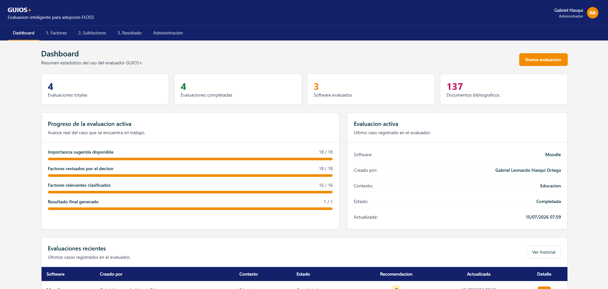
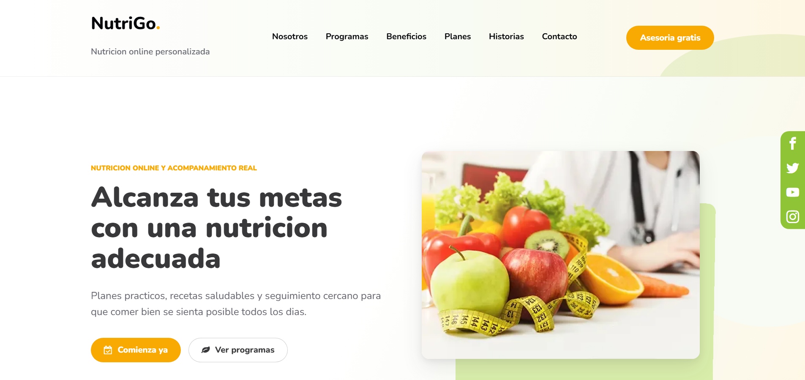

Perfil academico
- Ingenieria en Software
- Universidad Estatal de Milagro (UNEMI)
- Interes en soluciones tecnologicas
Software Engineering Student
Estudiante de Ingenieria en Software
Desarrollo soluciones tecnologicas enfocadas en aplicaciones web, APIs, analisis de datos e inteligencia artificial.
01 // About
Gabriel Leonardo Hasqui Ortega es estudiante de Ingenieria en Software en la Universidad Estatal de Milagro. Su perfil esta orientado a la mejora de procesos, el analisis de datos y la aplicacion de herramientas tecnologicas para resolver problemas reales.
Cuenta con interes academico en desarrollo backend, APIs REST, bases de datos, visualizacion y analisis de datos, ademas de proyectos relacionados con inteligencia artificial y Machine Learning.
02 // Skills
Tecnologias organizadas por categoria. El nivel indicado es cualitativo y honesto, sin porcentajes inventados.
03 // Work
Seleccion de proyectos academicos y propuestas en desarrollo. Los filtros permitiran explorarlos por area con JavaScript.

PROJECT_01
Plataforma web en Django para evaluar la adopcion de software libre mediante metodologia GUIOS, factores, subfactores, analisis FODA, recomendaciones e historial de resultados.
Problema: Evaluar alternativas de software libre requiere criterios, evidencia y trazabilidad.
Solucion: Aplicacion web con evaluaciones, roles, evidencia bibliografica, recomendaciones e informes PDF.

PROJECT_02
API REST con FastAPI que recomienda cultivos a partir de variables de suelo y clima, integrando un modelo de Machine Learning.
Problema: Elegir el cultivo adecuado depende de multiples variables agricolas dificiles de evaluar manualmente.
Solucion: Servicio backend que devuelve recomendaciones segun las condiciones ingresadas.

PROJECT_03
Landing page responsive en React y Vite para nutricion online personalizada, con secciones informativas, planes, FAQ y formulario conectado a WhatsApp.
Problema: Presentar servicios de nutricion digital de forma clara y orientada a conversion.
Solucion: Interfaz responsive con componentes reutilizables, imagenes optimizadas y contacto directo por WhatsApp.

PROJECT_04
Notebook de machine learning para entrenar y evaluar un modelo Random Forest que recomienda cultivos segun variables de suelo y clima.
Problema: Seleccionar cultivos requiere analizar nutrientes, temperatura, humedad, pH y lluvia.
Solucion: Modelo de clasificacion con Random Forest sobre un dataset agricola balanceado.
04 // System
Tokens y componentes que se usaran en todo el sitio para mantener un diseno consistente.
Parrafo - Texto de contenido para lectura comoda.
Texto secundario para informacion complementaria.
Enlace de ejemplo05 // Contact
Disponible para oportunidades academicas, practicas y proyectos de desarrollo de software.